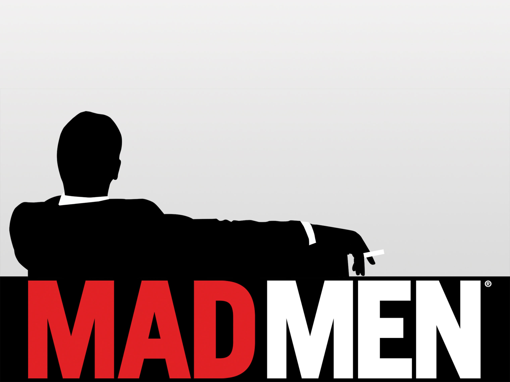
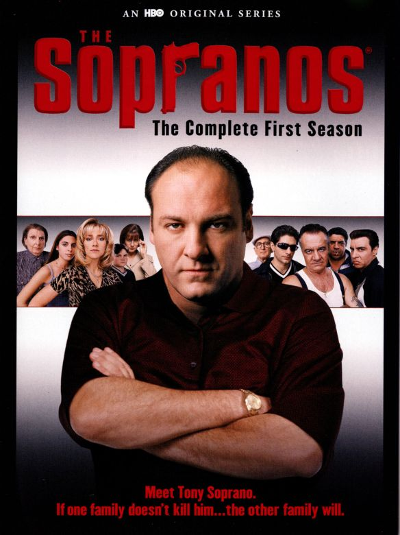
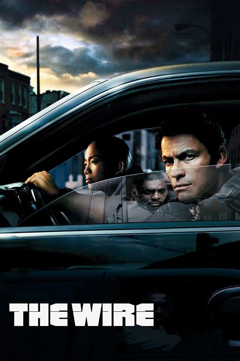
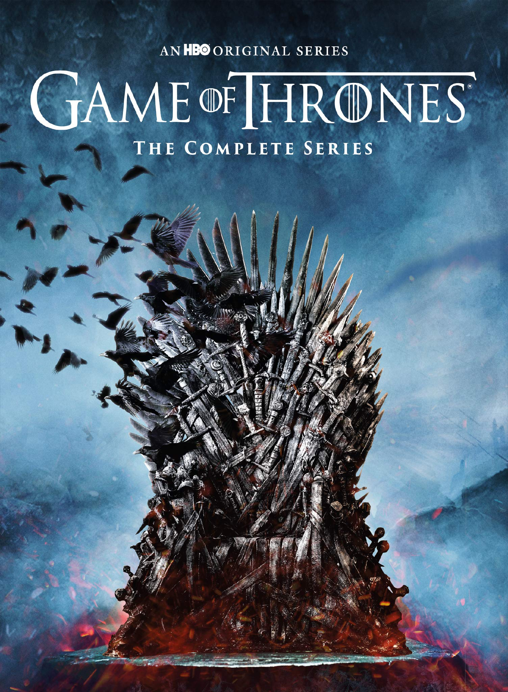
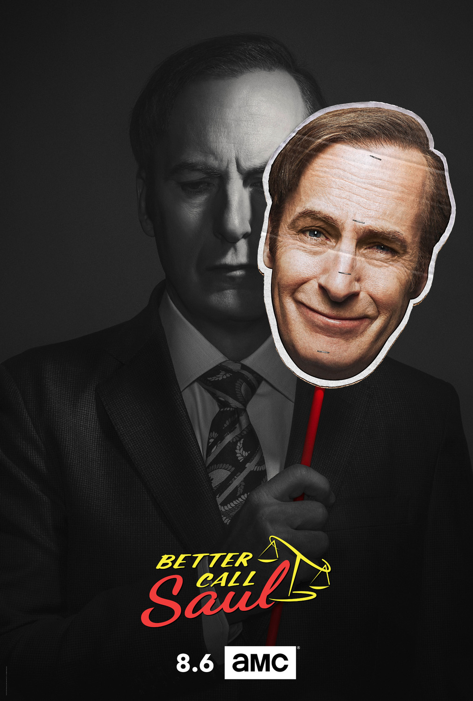

A drama about one of New York's most prestigious ad agencies at the beginning of the 1960s, focusing on one of the firm's most mysterious
but extremely talented ad executives, Donald Draper.

New Jersey mob boss Tony Soprano deals with personal and professional issues in his home and business life that affect his mental state,
leading him to seek professional psychiatric counseling.

The Baltimore drug scene, as seen through the eyes of drug dealers and law enforcement.

Nine noble families fight for control over the lands of Westeros, while an ancient enemy returns after being dormant for a millennia.

The trials and tribulations of criminal lawyer Jimmy McGill in the years leading up to his fateful run-in with Walter White and Jesse Pinkman.